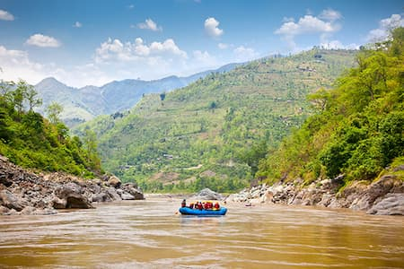

Our Mission
Welcome to Dry Oar! We are dedicated to providing the most exciting and safe whitewater rafting experiences in the world. Our expert guides ensure that every trip is an unforgettable adventure for you and your family.

Welcome to Dry Oar! We are dedicated to providing the most exciting and safe whitewater rafting experiences in the world. Our expert guides ensure that every trip is an unforgettable adventure for you and your family.
Established in 2005, Dry Oar began with a single raft and a passion for the river. Since then, we have expanded to over twenty rafts and a team of thirty world-class guides. Our mission has always been to share the beauty of the outdoors through the thrill of the rapids.


